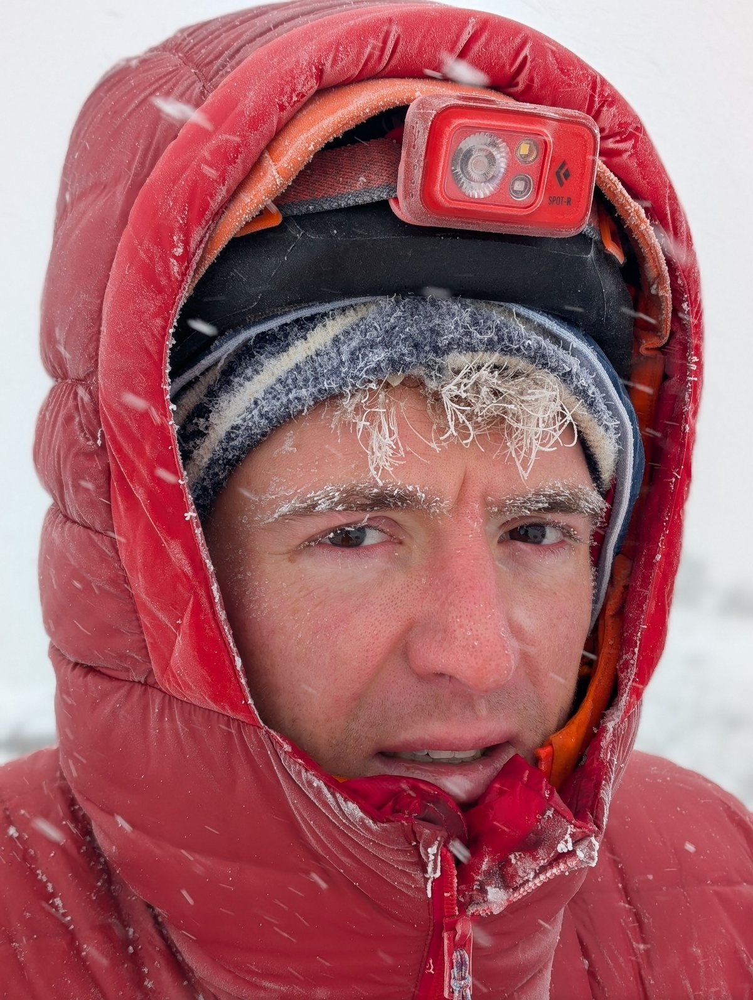
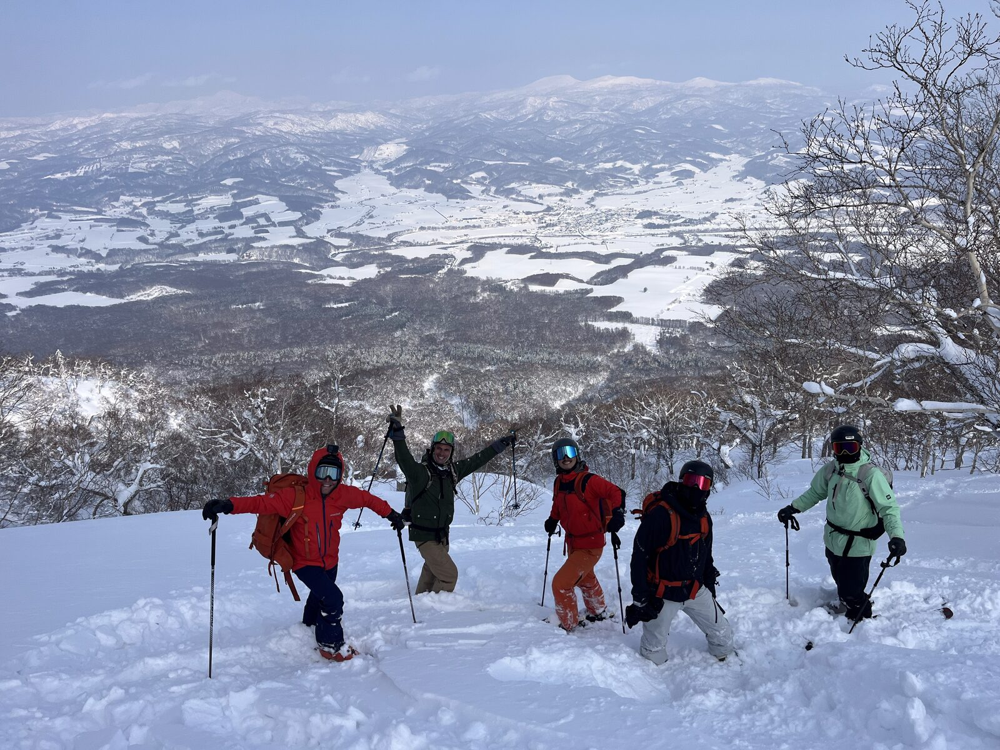
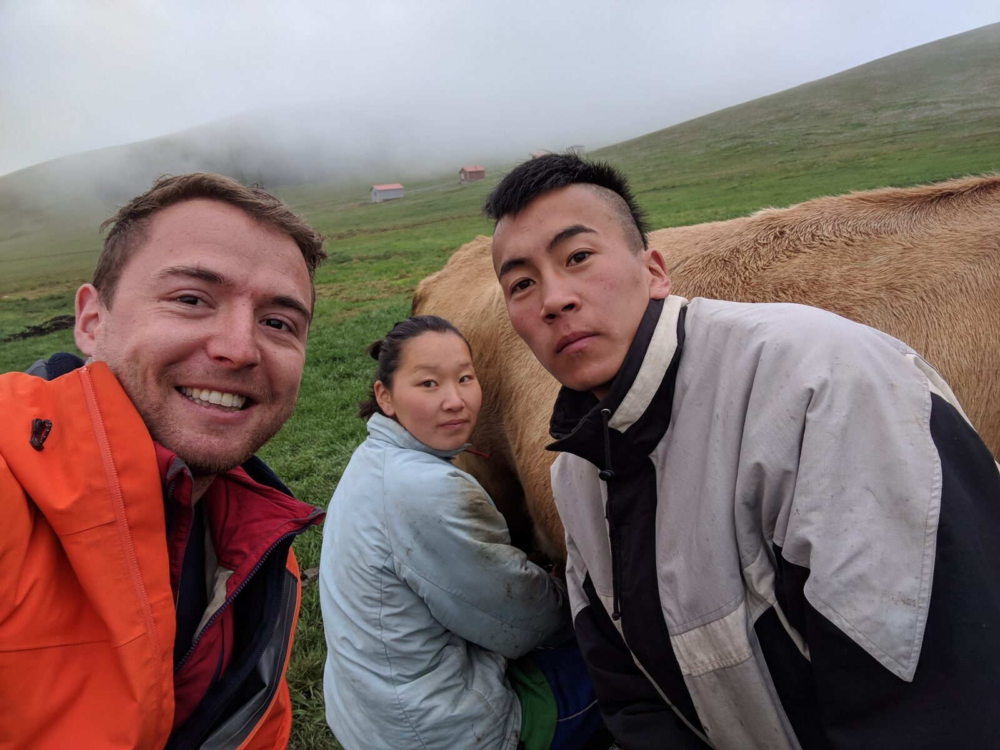
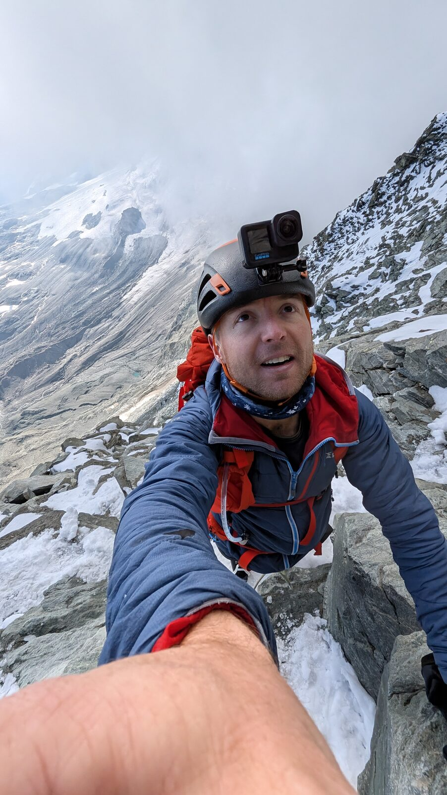
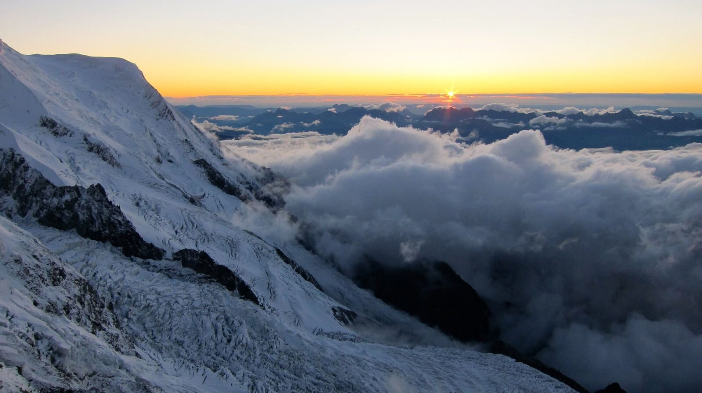

Field notes
Trip reports, what went wrong, and what I would do differently. Written after the fact, from the notes I dictate on the way down.

What four mountains taught me about altitude
Mont Blanc, Aconcagua, Kilimanjaro, the Matterhorn. Eleven years, three summits and one turnaround, and the turnaround taught me the most.
Read
Five gear mistakes I have watched end a climb
Every one of these happened in front of me, to someone who had trained for it. None of them were fixed by buying better kit. No product links in this one.
Read
Two days on Mt. Yotei: one turnaround, one summit
We booked a guide for two days because we were not confident about the first one. We were right. That decision is the only reason this post has a summit in it.
ReadThree peaks before the Matterhorn: what a build-up week is for
Barrhorn 3,610 m, Weissmies 4,017 m, Breithorn traverse 4,164 m. A ladder, not a list of nice days out, and it has the authority to cancel the trip.
Read
Mongolia: four days in gers, three days on a Soviet motorbike
August 2018 on the steppe with my best friend François. Horses, boodog, and the thing nobody tells you: nothing happens until the sun goes down.
ReadI learned to ride a motorbike the night before I rode across Vietnam
August 2013. I was 23, I had 40 days, and Riton taught me to ride in one evening on a street in Ho Chi Minh. Part one of two.
Read
Two attempts on the Matterhorn
Turned back at 3,800 m in 2025 with a group I had never climbed with. Came back a year later and was first on the mountain. What changed was not fitness.
Read
Five days from my first crampons to the summit of Mont Blanc
September 2015. The training day on the Mer de Glace was the first time I had ever worn crampons. I have never been that far out of my depth since.
Read
Kilimanjaro with eight friends, and the two who turned back
January 2026, seven days on the mountain. Aconcagua had taught me what altitude does. This time I knew how to spend it.
Read